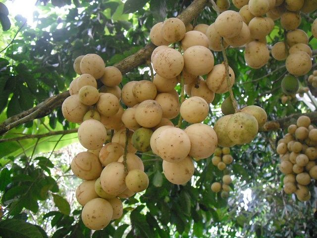
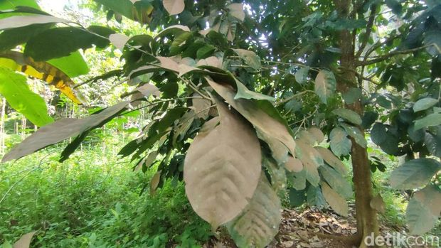
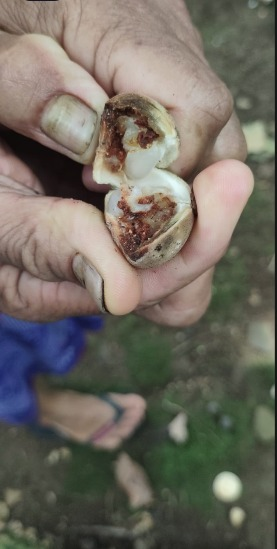
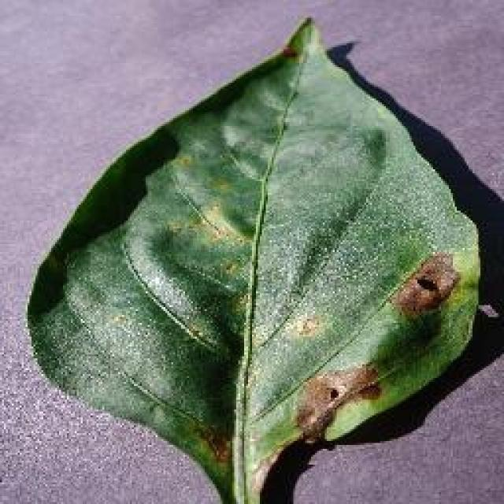
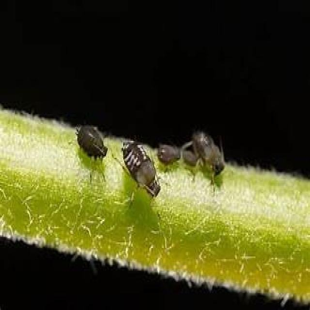
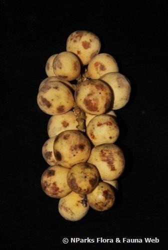

Deteksi Hama
Unggah foto atau ambil gambar daun/bagian tanaman duku langsung menggunakan kamera.
Gambar Terpilih:
Hasil visualisasi deteksi akan muncul di sini
Sedang Menganalisis Gambar via AI...
Unggah foto daun, buah, atau batang duku Anda untuk mendeteksi serangan hama & penyakit secara otomatis dengan kecerdasan buatan.

Akurasi Tinggi
Deteksi & Rekomendasi Obat Untuk Hama
Pilih foto dari galeri atau potret langsung dengan kamera perangkat Anda.
Gambar dianalisis oleh model YOLOv11 melalui API.
Lihat nama hama, confidence, gejala, dan tindakan.
Unggah foto atau ambil gambar daun/bagian tanaman duku langsung menggunakan kamera.
Gambar Terpilih:
Hasil visualisasi deteksi akan muncul di sini
Sedang Menganalisis Gambar via AI...
Daftar lengkap 7 hama dan penyakit yang sering menyerang tanaman duku beserta gejala awal.
Menghisap cairan daun & buah muda, meninggalkan lapisan bening lengket bercendawan hitam.

Menyebabkan bercak cokelat kehitaman pada permukaan daun hingga daun gugur.

Serangan Lalat buah menyuntikkan telur ke dalam buah, dan larvanya merusak daging buah, menyebabkan pembusukan dan bercak pada kulit buah.

Infeksi bakteri yang memicu timbulnya bintik/bercak kebasahan bertepi kuning di permukaan daun.

Hama mikroskopis yang membuat permukaan bawah daun berubah warna kemerahan/perunggu dan menggulung.

Penyakit Antraknosa Adalah Infeksi jamur seperti Colletotrichum sp. sering menyebabkan bercak coklat berbentuk bulat atau tidak beraturan yang kemudian meluas dan menyebabkan kebusukan pada buah, terutama setelah dipanen.

Larva yang membuat lubang di dalam kayu batang, menyebabkan cabang mengering, rapuh, dan layu.
Belum ada data deteksi. Lakukan analisis gambar di atas untuk melihat statistik.
0 classes · 0 predictions
Lakukan analisis gambar untuk melihat diagram prediksi.